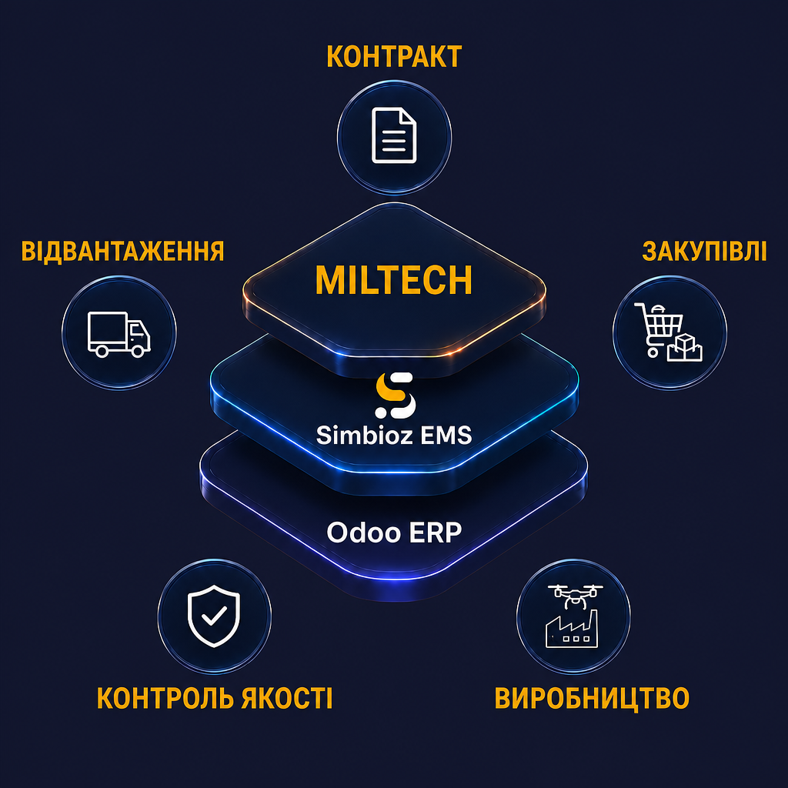

Розгортання в контурі підприємства
Система встановлюється на вашому сервері. Жодних зовнішніх трекерів у контурі MilTech.
Версії конструкції, аналоги компонентів, планування під контракт, партії, якість і фактична собівартість — в одній системі на ваших серверах.
Безкоштовно · 30 хвилин · без зобов'язань

Галузева конфігурація під серійне оборонне виробництво
Український фінансовий і обліковий контур у складі рішення, без другої системи
Безстрокова ліцензія, on-premise, без обмеження кількості користувачів
Якщо ви впізнаєте себе хоча б у двох, вам уже потрібен єдиний виробничий контур, а не ще одна програма.
Закупівля, склад і цех працюють із різними версіями специфікації
Ніхто не може точно сказати, що саме встановлено в конкретному виробі
План виробництва живе окремо від строків зобов'язань
Дані доводиться збирати вручну вже після того, як партію випущено
Excel та окремі системи перестають витримувати кількість операцій
Потрібна не бухгалтерія в новій обгортці, а новий операційний контур
Спільна ознака — повторюваний виріб зі складною багаторівневою специфікацією.
Кожна з цих чотирьох ситуацій має ціну, яку рідко рахують окремо — вона розчинена в собівартості, простоях і зірваних строках.
| Ситуація | Що відбувається | Чим закінчується |
|---|---|---|
| Цех працює за старою версією | Інженери оновили специфікацію, закупівля привезла компонент під попередню редакцію | Партія на переробку, заморожений запас, зупинка складання |
| Заміну компонента бачив тільки майстер | Про аналог не знають ні закупівлі, ні фінанси, ні приймання | Виріб не проходить приймання, простежуваність порушена, собівартість невідома |
| Собівартість рахується постфактум | Дані про закупівлі, брак і логістику лежать у різних файлах | Контракт може виявитися збитковим, і ви дізнаєтесь про це в кінці кварталу |
| Строк контракту живе окремо від плану | Зв'язок між зобов'язанням і цехом існує в голові директора або в окремому файлі | Про ризик зриву керівництво дізнається за два тижні до відвантаження |
Жодну з цих проблем не закриває окремий інструмент. Вони виникають саме там, де один процес передає результат іншому.
Конструктор змінює вузол, закупівлі бачать нову потребу, цех не може працювати за старою версією, собівартість перераховується, дата відвантаження оновлюється, без нарад, листів і ручної звірки таблиць.
Одна зміна в будь-якій точці ланцюга перебудовує все, що стоїть після неї.
Подивитися, як це працює на трьох сценаріяхТри сценарії, у яких наскрізність видно на конкретній дії, а не на схемі.
Демонстрація на анонімізованих синтетичних даних
Шість напрямів, які найчастіше вирішують питання
Дозволені заміни з пріоритетом, журнал кожної заміни, перерахунок плану й собівартості.
Версії специфікації, наскрізне поширення зміни, блокування застарілої редакції.
Зв'язок зобов'язання з планом цеху, ієрархічне планування, контроль строку.
Обґрунтована дата відвантаження за матеріалами та потужностями.
Приймальні випробування, маркування, історія партії та компонентів.
Фактична собівартість партії, прибутковість контракту, український обліковий контур.
Це шість напрямів, а не повний перелік. Складські операції, логістика, продажі, CRM, сервіс і кадровий облік працюють у тому самому контурі.
Готова MilTech-конфігурація на основі міжнародної ERP-платформи Odoo, що вже працює на приватних підприємствах ОПК України.
Зібрана під серійне оборонне виробництво. Система приходить налаштованою, а не порожньою.
Повна українська локалізація в складі продукту: перехід повний, без паралельної роботи двох систем.
Україномовна підтримка й українська вартість роботи на всьому життєвому циклі системи.
Безстрокова ліцензія, ваш сервер, доступ до вихідного коду.
Межі, вартість і дата запуску фіксуються до старту робіт.
Безпека — це контрольована архітектура, розмежування прав і процедури, а не декларація про захист.
Система встановлюється на вашому сервері. Жодних зовнішніх трекерів у контурі MilTech.
Вихідний код платформи й нашої конфігурації доступний вашій службі безпеки або залученому аудитору для перевірки.
Доступ до Simbioz EMS не дорівнює доступу до конструкції виробу. Права керуються до рівня груп полів.
Безстрокова ліцензія. Якщо оновлення зупинені, система й доступ до ваших даних залишаються.
MCP-сервер дає AI-агентам керований доступ до даних і дій усередині системи. Набір доступних агенту дій визначаєте ви.
Ядро платформи розвивається з 2005 року, має міжнародну спільноту розробників, публічний цикл випуску версій і понад 28 мільйонів користувачів у світі.
Більшість компаній переоцінюють свої можливості щодо самостійного впровадження. Тому на діагностиці ми оцінимо склад вашої команди й стан процесів, покажемо ризики і скажемо прямо, який варіант вам підходить.
15 000 $
Ліцензія, одноразово
1 000 $ / рік
За бажанням
До початку робіт ми визначаємо реалістичний обсяг першого етапу та фіксуємо результат, строк і бюджет.
Проєкт впровадження
Бюджет формується на перетині двох факторів:
Наявність рішень Simbioz EMS
Які ваші процеси вже закриваються готовими та відпрацьованими рішеннями системи.
Готовність підприємства
До яких змін реально готова ваша компанія, процеси, команда та окремі підрозділи.
Результат: впроваджуємо не максимум функціоналу, а той контур, який компанія реально зможе запустити й використовувати. До старту робіт ви знаєте, що отримаєте, коли і за який бюджет.
Дізнатися рамки бюджету для вашого підприємстваМи розробили власну технологію впровадження Simbioz EMS на основі досвіду комплексних ERP-проєктів. Вона охоплює весь шлях — від обстеження й фіксації меж до підготовки даних, навчання, тестування, запуску системи та підтримки. Кожен етап має конкретний результат і закриває типові ризики впровадження.
Підприємство ще не готове до системи
Ми оцінюємо зрілість компанії до старту і відверто відмовляємо у впровадженні, якщо підприємство ще не готове до змін.
Обсяг з'ясовується вже в процесі
Ми проводимо обстеження до старту впровадження та заздалегідь фіксуємо межі, результат, строк і бюджет проєкту.
Дані не встигають до запуску
Ми виділяємо окремий етап підготовки, очищення та перенесення даних із погодженими строками й відповідальними.
Керівництво не залучене до проєкту
Ми залучаємо першого керівника та ключових стейкхолдерів уже на етапі обстеження і фіксуємо їхню участь у ключових рішеннях.
Люди не переходять у нову систему
Ми навчаємо ключових користувачів до запуску системи та готуємо команду до роботи в нових процесах.
Проблеми виявляються вже після запуску
Ми проводимо окремий етап тестування, на якому команда клієнта проходить реальні бізнес-сценарії до введення системи в експлуатацію.
Визначимо цілі діджиталізації, ризики та рамки бюджету для вашого підприємства. Покажемо нашу технологію впровадження.
Програмний комплекс коштує 15 000 $ одноразово, безстроково, без обмеження кількості користувачів. Ліцензія — менша частина інвестиції: основний бюджет комплексного запуску формує проєкт впровадження, і його вартість фіксується після обстеження. Порядок бюджету впровадження для вашого підприємства ми називаємо після діагностики.
Стандартна Odoo не закриває повністю версіонування конструкції, аналоги компонентів і контрактне планування. Галузеву специфіку дає конфігурація Simbioz EMS: 400+ власних модулів, написаних під конкретні виробничі задачі. Міжнародна платформа Odoo дає перевірену основу з кодом, доступним для аудиту.
Перехід повний, а не паралельний: українська локалізація в складі системи закриває первинні документи, ПДВ, митні декларації, курсові різниці за курсами НБУ й банків, касові та складські форми. Підприємство не тримає дві системи й ручну звірку між ними. Юридичний бік теж має значення: Постанова КМУ № 1335 від 22 жовтня 2025 року. Але головний аргумент архітектурний: можливість аудиту коду проти її відсутності й власність підприємства на систему проти залежності від єдиного вендора.
Перший робочий контур запускається в експлуатацію від 2 місяців. Точний строк і склад робіт фіксуються в договорі після обстеження, а не уточнюються в процесі.
Так. Це має сенс, якщо у вас є власна команда з досвідом впровадження ERP, описані процеси й виділений керівник проєкту. Якщо цього немає, ліцензія без впровадження з високою ймовірністю залишиться встановленою, але не запущеною. На діагностиці ми скажемо прямо, який варіант вам підходить.
На вашому сервері. Система встановлюється в контурі підприємства. Вихідний код доступний для аудиту вашою службою безпеки. Платформа, на якій побудована система, сертифікована за ISO/IEC 27001.
Це найчастіша реальна причина провалу таких проєктів, і причина рідко технічна. Тому користувач отримує передналаштовану конфігурацію під свій тип виробництва й зрозумілу послідовність дій, а не порожню платформу. Навчання персоналу входить у зафіксований обсяг впровадження як окремий напрям робіт із виділеним часом.
Не знайшли свого питання? Залиште своє питання у формі запиту на діагностику.
На діагностичній зустрічі з нашим аналітиком
за 30 хвилин ви отмаєте: